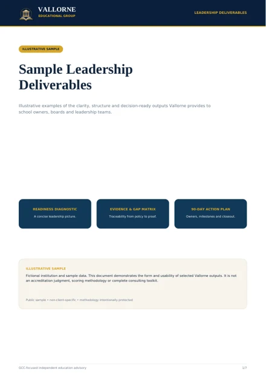

Institutional systems that can be seen, used and evidenced.
Quality, accreditation, curriculum and improvement remain separate disciplines - but they must work together inside the school.
Institutional Quality
Self-evaluation, evidence management, policy-to-practice review, governance clarity and executive visibility.
Accreditation Readiness
Framework-specific readiness diagnostics, gap analysis, self-study facilitation, evidence control and external-review preparation.
Curriculum Review & Development
Alignment, scope and sequence, assessment coherence, localization, resource QA and programme establishment.
School Improvement
Improvement planning, KPIs, ownership structures, progress reviews and implementation support.
Strategic School Advisory
Financial strategy and scenario review, teacher workload and capacity review, and school operations/governance review.
Professional Learning & English Development
Staff English, teacher professional learning, institutional training and capability-building tailored to school priorities.
Framework-specific, never checkbox-generic.
MSA-CESS, Cognia, IB and Cambridge differ in standards, process and language. Vallorne reuses good institutional evidence where appropriate, but does not pretend the frameworks are interchangeable.
MSA-CESS
Readiness diagnostics, Project Gold Seal managed preparation, self-study facilitation, evidence and review readiness.
Cognia
Continuous-improvement readiness, standards interpretation, evidence systems and engagement preparation.
IB / Cambridge
Programme readiness and institutional preparation using the correct authorization, evaluation, registration and approval terminology.
Independent advisory: Vallorne does not award accreditation or authorization, represent an accreditor, or guarantee outcomes.
See the kind of work leadership receives.

Scope first. Price second.
A single-school diagnostic, a multi-campus accreditation programme and a curriculum establishment project are materially different engagements. Vallorne scopes the work after discovery and quotes a defined professional fee rather than publishing a misleading blanket price.
Book a leadership conversation